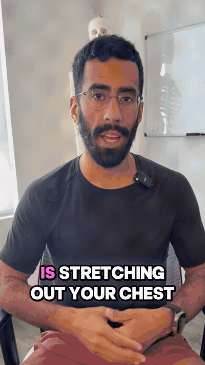
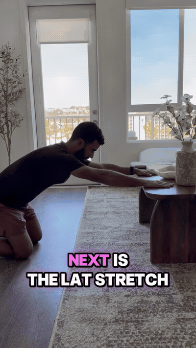
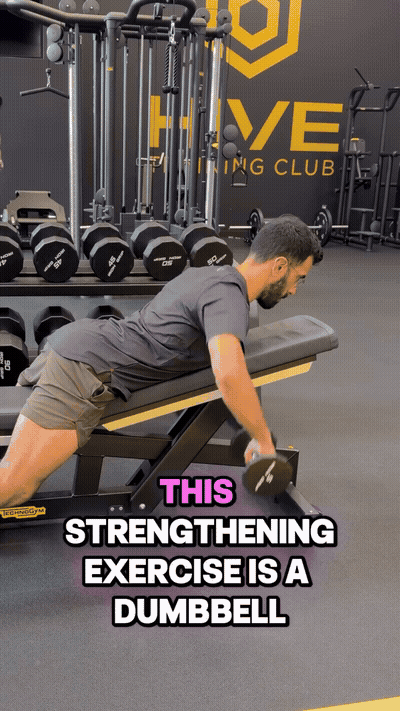
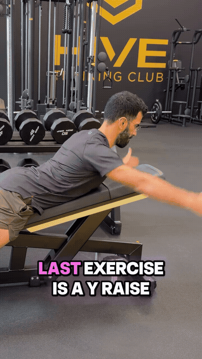

Use a doorway at home or a TRX setup as shown. Lean into a controlled chest and shoulder stretch while intentionally improving the available range.

With the hands supported on a table, actively reach toward the wall and turn the elbows slightly inward to feel the lat area beneath the armpits.

Use light dumbbells and bring the hands back with the elbows wide in a T shape. Engage the upper back and guide the shoulders back and down.

Raise the arms behind the head in a Y shape while keeping the shoulders controlled. Reach back only as far as the shoulder range allows without pain or neck compensation.